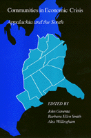

Resisting injustice in Appalachia and empowering residents to build democratic alternatives to the heritage of enduring poverty
Resisting injustice in Appalachia and empowering residents to build democratic alternatives to the heritage of enduring poverty


 Resisting injustice in Appalachia and empowering residents to build democratic alternatives to the heritage of enduring poverty
Resisting injustice in Appalachia and empowering residents to build democratic alternatives to the heritage of enduring poverty

|  |
Communities in Economic CrisisAppalachia and the Southedited by John Gaventa, Barbara Ellen Smith and Alex Willinghampaper EAN: 978-0-87722-650-5 (ISBN: 0-87722-650-4) |
Hard times are no stranger to the people of Appalachia and the South. Earlier books have documented the low wages of the textile industry, boom-and-bust cycles of coal mining, and debt peonage of Southern agriculture that have established a heritage of poverty that endures. This book is a unique collection of essays by people who are actively involved in the efforts to challenge economic injustice in these regions and to empower the residents to build democratic alternatives.
Part I: Case Studies of Crisis and Struggle
1. "It Has to Come from the People": Responding to Plant Closings in Ivanhoe, Virginia — Maxine Waller, Helen M. Lewis, Clare McBrien, and Carroll Wessings
2. People Power: Working for the Future in the East Kentucky Coalfields — Kristin Layng Szakos
3. Voices from the Coalfields: How Miners’ Families Understand the Crisis of Coal — Mike Yarrow
4. "Women Miners Can Dig It Too!" — Betty Jean Hall
5. Organizing Women for Local Economic Development — Chris Weiss
6. Organizing Rural Farmers: Central Kentucky in Global Context — Hal Hamilton
7. From the Mountains to the Maquiladoras: A Case Study of Capital Flight and Its impact on Workers — John Gaventa
8. A Betrayal of Trust: The Impact of Economic Development Policy Upon Working Citizens — John Bookser-Feister and Leah Wise
9. Alternative Worker Organizing in South Carolina — Charles Taylor
10. Voting Rights and Community Empowerment: Political Struggle in the Georgia Black Belt — Alex Willingham
11. Race, Development, and the Character of Black Political Life in Bogalusa, Louisiana — Rickey Hill
12. Economic Slavery or Hazardous Wastes: Robenson County’s Economic Menu— Richard Regan and Mac Legerton
13. The Mayhew Tree: An Informal Case Study in Homegrown Economic Development — Ralph Hils
Part II: Visions for the Future
14. Saturn: Tomorrow’s Jobs, Yesterday’s Wages and Myths — Carter Garber
15. Environmentalism, Economic Blackmail, and Civil Rights: Competing Agendas Within the Black Community — Robert D. Bullard
16. New Workforce; New Organizing: The Experience of Women Office Workers and 9 to 5 — Cindia Cameron
17. The Changing International Division of Labor: Links with Southern Africa — Ann Seidmun
18. Economics Education, a Cultural and Political Project — Wendy Luttrell
19. Naming the Problem: Some Perspectives from Creole Culture — Deborah Clifton Hils
20. Towards a Human Needs Economy — Richard A. Couto
21. National Economic Renewal Programs and Their Implications for Economic Development in Appalachia and the South — Steve Fisher
22. Toward a New Debate: Development, Democracy, and Dignity — the editors
John Gaventa is Assistant Professor of Sociology at the University of Tennessee, Knoxville, and a staff member of the Highlander Research and Education Center.
Barbara Ellen Smith is former Research Coordinator of the Southeast Women’s Employment Coalition and the author of Digging Our Own Graves: Coal Miners and the Struggle over Black Lung Disease (Temple).
Alex Willingham is Research Director of the Southern Regional Council.
Sociology
Political Science and Public Policy
Labor and Social Change, edited by Paula Rayman and Carmen Sirianni.
Labor and Social Change, edited by Paula Rayman and Carmen Sirianni, includes books on workplace issues like worker participation, quality of work life, shorter hours, technological change, and productivity, as well as union and community organizing and ethnographies of particular occupations.
© 2015 Temple University. All Rights Reserved. This page: http://www.temple.edu/tempress/titles/674_reg.html.